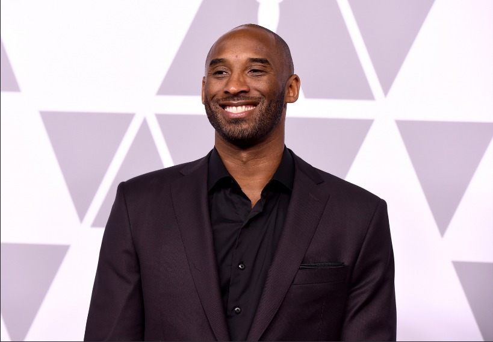

Kobe Bean Bryant
The man who never gave up

Kobe dressed up in a suit for an award ceremony
Here's a time-line of Kobe's Life:
- 1978 - Kobe Bryant, the son of NBA player Joe "Jellybean" Bryant, was born on August 23, 1978, in Philadelphia, Pennsylvania.
- 1996 - Kobe Bryant spent his high school career in Philadelphia from 1991-1995, coming to the 1996 NBA draft fresh off a hot streak of four state championships with Lower Merion High School. He ended his high school days as Southeastern Pennsylvania's all-time leading scorer, with 2,883 points, surpassing even Wilt Chamberlain.
- 1997 - Kobe Bryant didn't start out as a dominant force, but he did soon become one. The infamous "airball game," is usually credited with being his turn around point. A 1997 losing effort at the Western Conference semifinals. Bryant, an 18-year-old rookie, airballed no less than four free throws — entirely missing the rim and the backboard. The embarrassment made him focus and train extra hard to great effect, and today, many consider this single game to be a defining moment in his career.
- 1998-2000 - Kobe was just 19 years and 170 days old in 1998 when he became the youngest ever player to feature in an All-Star Game. He played on the Western Conference team alongside Tim Duncan, Gary Payton, and fellow Laker Shaq, among others. Though the Western Conference would lose 135-114, Kobe would go on to make another 17 All-Star appearanceThough Kobe and Shaq dominated throughout the regular season, it would take until year 2000 for Bryant to win his first NBA title.
- 2001-2002 - Two more titles, first all-star game MVP
- 2003 - Charged with sexual assault, the basketball superstar was charged with sexual assault of a 19-year-old front desk clerk at the Lodge & Spa at Cordillera in Edwards, Colorado. The woman said Bryant assaulted her in his hotel room, and the extremely high-profile case would take 14 months to resolve. With his wife Vanessa at his side, Bryant admitted to cheating on her, but insisted he was otherwise innocent. Nevertheless, the incident was a heavy blow to his reputation.
- 2004 - 2004 was a particularly turbulent year for Kobe Bryant. He played brilliantly and the Lakers made it to the finals, and he even locked in a cool seven-year contract with the team that was worth $136 million. However, he was often flying between his day job and dealing with his criminal court situation with the "Jane Doe" accusing him of sexual assault. Though she dropped the criminal suit, the woman did file a civil lawsuit against Bryant for an "unspecified amount of damages."
- 2005 - Bryant was essentially the most hated man in the NBA for the 2004-2005 season, because people felt he had driven Shaquille O'Neal out of the team (and because of the whole sexual assault case situation, obviously). It didn't help that while Bryant himself played fairly well, the Lakers failed to reach playoffs that year. Guess who took the blame?
- 2006 - Kobe Bryant had to enter the 2006 NBA season with a big ol' slice of humble pie in his hand, his reputation was in tatters and he bore the brunt of the blame from the Lakers' recent failures. However, he ate it all without wincing, and went on to become the best Kobe Bryant he could possibly be. He played the absolute best season in his career, including a ridiculous 81-point game against the Toronto Raptors and a 62-point one against the Dallas Mavericks. He even managed to carry his otherwise underwhelming team back in the playoffs. There were other changes, too — he finally ended the longtime animosity with his rival, Shaquille O'Neal.
- 2008 - Kobe Bryant added massively to his resume in 2008, when BBC writes he won his first Olympic gold with the U.S. men's basketball team at the Beijing Summer Olympic Games. USA beat Spain in the finals, thanks to the "Mamba Mentality" that Bryant brought to the team as captain.
- 2009-2010 - In 2009, Bryant took his fourth NBA title and was named the MVP of the finals, while also speeding past Jerry West's record of "points scored as a Laker" (25,192). 2010 brought a fifth NBA title and another Finals MVP plaudit, along with a three-year contract extension that was worth $84 million. Kobe would ultimately earn $680 million in salary and endorsements over his two decade career- the most ever for a team athlete during their playing career.
- 2011 - The year 2011 was a pretty bad one for Kobe Bryant. He was in hot water with the NBA for slinging an "anti-gay slur" at a referee, and was eventually fined $100,000. Things were hardly better on the home front, either: Bryant's wife, Vanessa, decided to file for divorce.
- 2012 - Olympic success again. Even for someone as successful as Kobe, becoming a two-time Olympic champion held a special significance, and pushed Kobe further into the realm of international stardom. "It carries a great honor. It goes above and beyond winning an NBA championship," he said about winning his Olympic gold medals in a 2015 interview.
- 2013 - This year, Kobe Bryant managed to reconcile with his wife, Vanessa. Unfortunately, the other big Kobe news in 2013 were a mixed bag. Bryant had to file a lawsuit against his mother, Pamela, to prevent her from "auctioning off" all sorts of things from the early days of his career. He also ruptured his Achilles' tendon in a game — a potentially career-ending injury that required surgery and sidelined him for up to nine months. However, the Lakers were still happy to give the 35-year-old player a $48.5 million contract extension.
- 2014 - On December 13, 2014, Kobe Bryant finally passed Michael Jordan and gained the third place on the NBA's all-time scoring list. The impending achievement had been the talk of the basketball town for quite some time, and caused publications to openly wonder which of the two players is "the greatest of all time."
- 2016 - In 2016 Kobe Bryant retired from the hardwood, scoring 60 points in his farewell game as if to show basketball fans just why they loved him.
- 2017 - Kobe had always worn jersey numbers 24 and 33 during his youth, but when he joined the Lakers, neither was an option. George McCloud wore No. 24 and No. 33 had been retired in recognition of Kareem Abdul-Jabbar. So he went with number 8, before switching to No. 24 before the 2006-2007 season. In 2017, the Lakers decided to just retire them both, and Bryant became the only man in NBA history to "have two numbers retired by the same team."
- 2018 - Bryant won his Academy Award for Dear Basketball, an animated short based around a poem he wrote to announce his retirement.
- 2019 - In 2019, Bryant revealed his latest career move: He was now working on a young adult book series called The Wizenard Series. The first book, Training Camp, was written by Wesley King and created by Bryant, and it focuses on a ragtag basketball team called the West Bottom Badgers and their strange wizard trainer. Bryant would state that Phil Jackson served as an inspiration for the wizard trainer, as he would often burn incense, or make the Lakers practice Tai Chi.
- 2020 - On January 26, 2020, Kobe Bryant and his daughter, Gigi, died in a helicopter crash in Calabasas, as TMZ tells us. All nine people onboard perished, and the world was left stunned. A man who began his career as an excellent athlete ended it as an icon and inspiration to millions the world over. On the court, his name became synonymous with success, to the point that people of all ages would yell "Kobe!" when their shot was on target. Off the court, he became a symbol of discipline and determination, and strove to lead others to a higher level. He began a second career as a storyteller, but his life itself was an epic tale bordering on myth. Though that life was tragically cut short, Kobe Bryant's legacy will live on.
Be willing to sacrifice anything, but compromise nothing in your quest to be your best." —Kobe Bryant